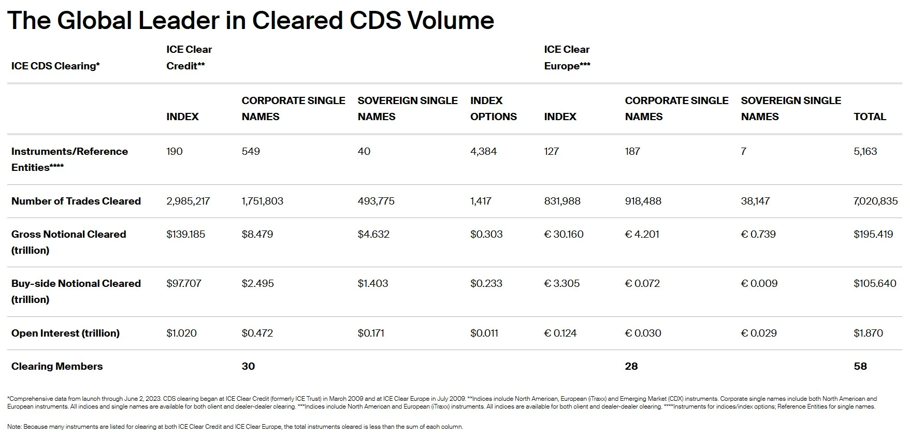
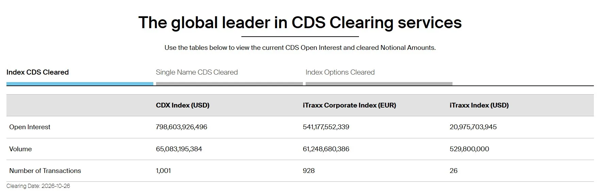

ICE · Marketing Manager, Futures · 2024–2025
ICE Clear Credit publishes the clearing figures that credit markets watch, in numbers that run into the hundreds of billions. They were updated by hand. I rebuilt the tables to pull straight from ICE's database and redesigned them so anyone can read them at a glance.
Role
Led UX content strategy for ICE.com Futures
Team
Business stakeholders and developers
Product
ICE Clear Credit CDS clearing data on ICE.com
Focus
Data automation and information design
Every number was typed by a person. Clearing figures were updated manually, every day. One mistyped digit in a figure counted in trillions could misinform the market participants relying on it, and the page could quietly fall out of date: the old table still showed data "through June 2, 2023."
And the table was hard to read. Two clearing houses sat side by side in one nine-column grid, with stacked headers, dollars and euros mixed together, figures rounded to trillions, and four layers of asterisk footnotes.
Before

After

The tables are linked to ICE's database, so they update on their own every clearing day. No retyping, no copy errors, and a visible clearing date shows exactly how current the numbers are.
Instead of one grid for everything, three tabs split the data by product: Index CDS, Single Name CDS and Index Options. Each table has just three columns to compare.
Rows use plain terms: Open Interest, Volume, Number of Transactions. The currency sits in each column header, figures are written out in full, and no footnotes are needed.
0
manual updates needed
Daily
refresh, straight from the database
9 → 3
columns to scan per table
4 → 0
footnotes needed to read the data
Next case study
Line Change: Turning Heart Rate Into Hockey Stats